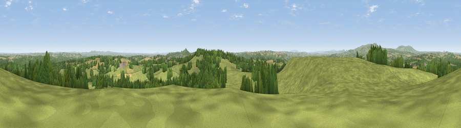

Church Hill
#7537 in England · top 14% of its area beats it · near Clows TopThe view, rendered

A 360° render of this exact spot computed from the terrain model, tree cover and land cover — summer colours, afternoon light, calibrated against photographs of famous viewpoints. Real trees, hedges and buildings will differ in detail.
The panorama
Grey silhouette: terrain skyline in each direction (720 bearings, Earth curvature and refraction included). Dashed green: skyline with trees (+15 m) and buildings (+8 m) as obstacles. Blue strip: how far the ground is visible on each bearing.
Where the view opens
Wedge length = distance to the farthest visible ground on that bearing (vegetation-aware). Rings at 10, 25 and 50 km.
What fills the view
66% grassland · 26% woodland · 7% cropland ·
Angular shares of the visible panorama (visual magnitude), not map area. Landscape diversity 0.37 (0–1 Shannon).
Key numbers
More beautiful places nearby
The staircase of upgrades: each row has a higher view potential than everything closer. Driving times are estimates from straight-line distance, calibrated against real road routing — check an actual route before setting out.
| Place | Direction | Drive | Score |
|---|---|---|---|
| Viewpoint near Bayton | W · 0 km | ~1 min | 67.5 |
| Abberley Hill | SE · 7 km | ~15 min | 80.4 |
| Woodbury Hill | SSE · 9 km | ~18 min | 81.6 |
| Viewpoint near Great Witley | SSE · 10 km | ~19 min | 83.4 |
| Titterstone Clee | WNW · 13 km | ~24 min | 83.8 |
| North Hill | SSE · 27 km | ~44 min | 86.8 |
| Worcestershire Beacon | SSE · 29 km | ~45 min | 87.1 |
| Viewpoint near West Quantoxhead | SSW · 143 km | ~166 min | 87.9 |
52.35542, -2.42685 · source: osm peak · position refined by local search. Computed location — check access rights before visiting.